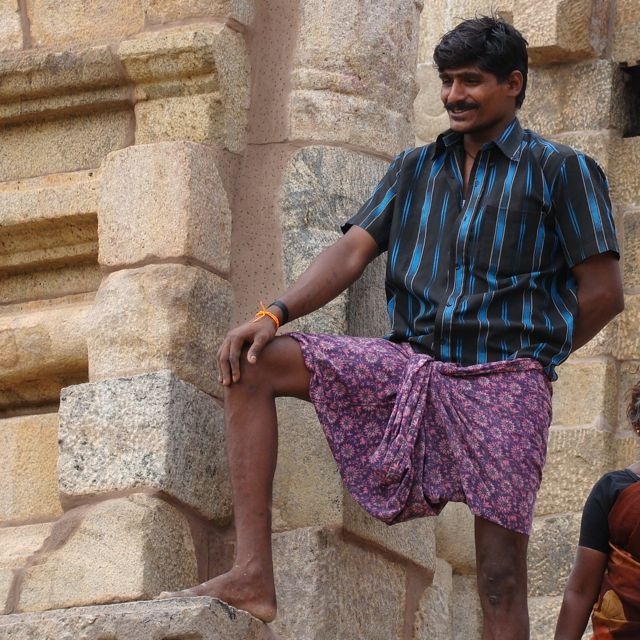
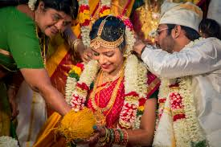
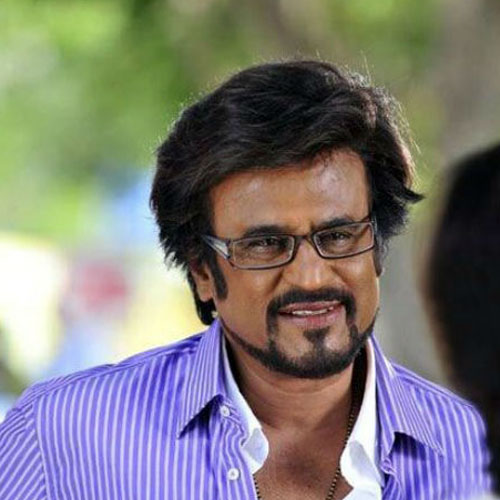
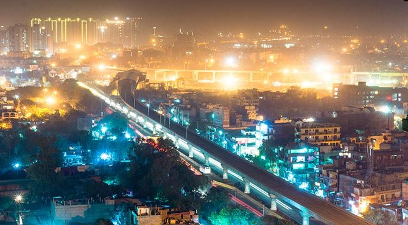
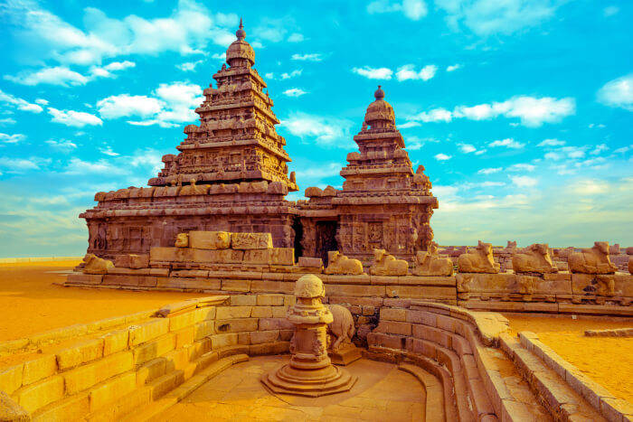

My Tamil Heritage

Tamil Nadu
Tamil Nadu, a state of India, is located in the extreme south of the Indian subcontinent. It it bounded by
the Indian Ocean to the east and south, and Kerala, Karnataka and Andhra Pradesh to the west, northwest
and north respectively. The capital is Chennai (Madras), on the coast in the northern portion of thestate.
History
The history of Tamil Nadu begins with three powers: the Chera, the Chola and the Pandyas. From mid-6th
century until the 9th century, the Chalukyas of Badami, the Pallawas of Kanchu (now Kanchipuram) and the
Pandyas of Madurai fought a series of wars. This period was marked at the revival fo Hinduism, and
advancement of the fine arts. From about 850, Tamil Nadu was ruled by the Cholas, and in the 14th century
the Hindu kingdom Vijayanagar became prominent. During the 300 years of rule under Vijayanagar, Telegu
speaking government officials were introduced. In the 1640, East Asia Company, part of England, took
control on India, and Tamil Nadu was named: Madraspatnam. After 1947, the Indian Independence,
Madraspatnam was broken down until 1968, when Madraspatnam was officially named: Tamil Nadu.
2 Tamil Traditions

-
Saree: Traditional clothing worn by Tamil women

-
Lungi: Traditional clothing worn by Tamil men

-
Tamil Marriage: Run by a priest in an extravgant hall, where everyone wears traditional clothing
3 Tamil Festivals

-
Pongal: Revered as one of the most religious events in Tamil Nadu, Pongal is a four-day
festival that celebrates the flourishing of harvest and praises the Sun Lord for bestowing
the land withprosperity

-
Jallikattu: An essential part of the pongal festival, done on one of the 4 days of pongal.
This popular sport is based around trying to master the bull, and is played all around Tamil Nadu.

-
Deepawai: Represents the victory of Lord Kirshna over the evil, and celebrated during deepawali.
This festival is celebrated with lights, sweets and fireworks.
People of Tamil Nadu
Population Information
|
| Total
| Male
| Female |
| Population |
72,138,958
| 36,158,871
| 35,980,087
|
| Ages 0-6
| 6,894,821 |
3,542,351
| 3,352,470
|
| % of 0-6 |
9.56
| 9.80 |
9.32 |
| Literates |
52,412,116 |
28,314,595
| 24,098,521 |
| % of Literate |
80.33 |
86.81 |
73.86 |
Tamil
Nadu: 2011 Census
3 Famous Tamil People

-
Rajinikanth: Regarded as the most popular South-Indian actor

-
Kamal Haasan: Actor, Screenwriter and Producer
-
Sundar Pichai: CEO at Google
3 Places to Vist in Tamil Nadu
-
Chennai

Chennai is one the largest cities in India and capitalof the state of Tamil Nadu.
It is also one of the famous Tourist places in Tamilnadu.
Things to do:
-
Go to one of the many museum
-
Relax at one of the beach locations
-
Visit several historical locations around the city
-
Hogenakkal Falls

Hogenakkal Falls is a waterfall in on the Kaveri (or Cauvery) River located in
Dharmapuri district of Tamil Nadu. It is a major waterfalls near Bangalore and also
one of the best waterfalls in India, sometimes referred to as the 'Niagara of India'.
Things to do:
-
Tourists can take a boat ride to the falls
-
If you are daring, you can try to swim in the river
-
Tourists can also go trekking on the nearby hills
-
Mahabalipuram

Mahabalipuram (also called Mamallapuram) is situated in Kanchipuram district
in the state of Tamil Nadu. It is famous for its shore temples built in 7th century.
Mahabalipuram is one of the must visit weekend getaways from Chennai for one day trip.
This also a major historical / heritage site in Tamil Nadu and one of the best places to
experience Tamilnadu Tourism. Mahabalipuram is one of the best places to include in your
Pondicherry tour packages.
Things to do:
-
Visit Thirukadalmallai temple
-
Go to Cholamadal Artist's Village
-
Take a break at Mahabalipuram Beach